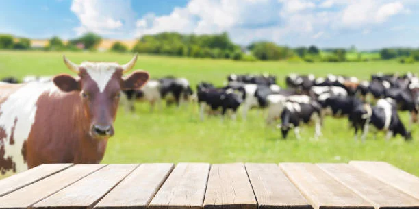

Connecting modern lifestyles with traditional dairy values & pure A2 milk.
Desi Cow Milk was created with the vision of connecting people with traditional dairy practices and quality Gir cow milk. Our approach focuses on maintaining quality throughout the dairy process, from caring for cows to delivering products to customers.
We believe that traditional dairy knowledge combined with responsible modern practices can create a better experience for today's families.

Building trust through consistent quality and traditional care.
Offer quality dairy products while promoting responsible and traditional dairy practices.
Become a trusted name for families looking for pure, unadulterated Gir cow dairy products.
Prioritize cow health and hygienic processing to deliver natural dairy goodness.
Highest importance given to quality at every single stage.
Respecting authentic desi cow dairy wisdom.
Transparent and dependable daily service.
Daily fresh milk and traditional dairy items.